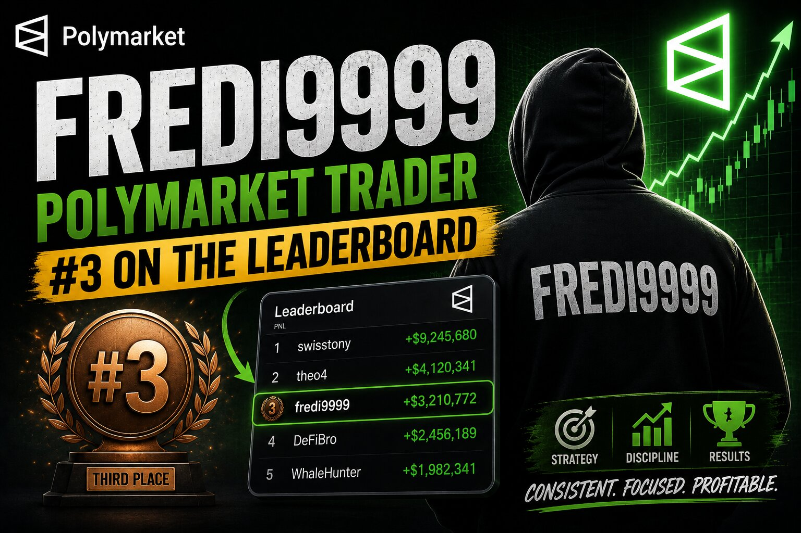

Fredi9999 on Polymarket: The $85M French Trader Who Cornered the Trump Market

Most wallets on the Polymarket leaderboard get there through volume — thousands of small trades, grinding an edge across hundreds of markets. Fredi9999 got there with almost the opposite approach: 45 total predictions since joining in June 2024, a single biggest win of $9.7M, and today, a positions value of exactly $0.00. The account isn't inactive because it failed. It's dormant because the trade it was built for already happened, resolved, and paid out.
To understand why a near-empty profile is one of the most written-about wallets in Polymarket's history, you have to rewind to October 2024.
Building an $8M position without anyone noticing — at first
In early October 2024, researchers tracking Polymarket's order flow noticed something odd: the price of the "Trump to win" contract kept drifting upward on mornings with no corresponding news, and the move wasn't showing up on regulated U.S. exchanges like Kalshi at all. The cause was eventually traced to one account, Fredi9999, which had quietly accumulated roughly 7 million Trump contracts and was placing large limit buy orders just above the best bid — effectively setting a floor under the price every time it dipped.
Analysts noted the technique closely mirrored a strategy used by a trader who backed Romney in 2012 across nearly 23,000 separate trades — patient accumulation rather than one loud bet. By mid-October, Fredi9999's Trump-related holdings were valued near $8.4M, with an outsized concentration in Pennsylvania contracts specifically.
From curiosity to headline
The size kept growing. Within two weeks the position had scaled from roughly $6.4M to over $28M when combined with three related accounts — Theo4, PrincessCaro, and Michie — all eventually traced to the same source. Polymarket itself confirmed the pattern publicly, telling reporters the trader behind the accounts was a French national with an "extensive trading experience and a financial services background," and stated it found no evidence of market manipulation, just a large directional bet based on personal conviction.
By election week, cumulative volume attributed to the wallet had passed $73M, with roughly $12M actively on the line for a Trump win. In the days after Trump's victory, blockchain analytics firm Chainalysis widened its estimate further, identifying as many as 11 linked accounts controlled by the same trader and putting total realized profit above $85M.
Why the account looks abandoned now
None of that history is visible if you land on the Fredi9999 profile today. The market resolved, the position closed, and the wallet has effectively gone quiet — 45 lifetime predictions, no open positions, no recent activity. That's the natural end state of a strategy built around one high-conviction, binary event rather than continuous trading: once the event resolves, there's nothing left to hold. The $9.7M "Biggest Win" figure is the fossil record of a trade that's already over.
What made the position work
Fredi9999's edge wasn't a secret model or inside information anyone ever proved — it was scale, patience, and conviction deployed early, when Trump contracts were still priced meaningfully below where the trader believed the true probability sat. By building the position gradually with limit orders instead of aggressive market buys, the account avoided pushing the price against itself as hard as a single lump-sum purchase would have, letting it accumulate tens of millions of dollars in exposure while still getting filled at favorable average prices.
The risk side is just as instructive. A 45-trade account with tens of millions of dollars concentrated in one outcome has no room for being wrong. This wasn't diversified risk-taking — it was a wager that a specific binary event would resolve a specific way, sized far beyond what almost any trader on the platform would consider prudent. It happened to work.
The takeaway
Fredi9999 is a reminder that prediction market whales don't all look the same. Some, like high-frequency sports grinders, win by making thousands of small, uncorrelated bets. Fredi9999 won by making one enormous, highly correlated bet and having the capital — and the conviction — to hold it through weeks of volatility and public scrutiny. It's not a strategy most accounts could replicate, and it's not one this account has needed to repeat since.
See Fredi9999's history and current positions directly on Polymarket.